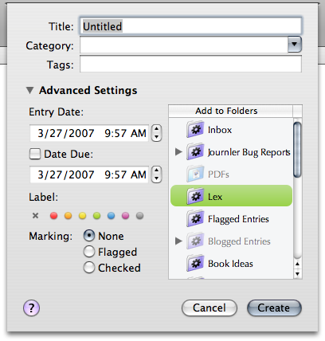
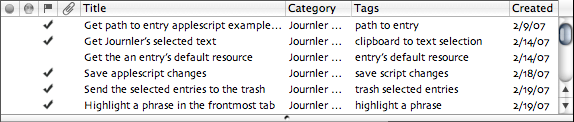

Journler Basics
Journler Basics
Journler is a daily notebook and entry based information manager. The goal is to create a space in which you chronicle, organize, find and connect the thoughts, experiences and media most important to you. Ultimately Journler hopes to provide access to that recorded information from as many perspectives as possible.
The Dated Entry
As in a traditional notebook, the central object in your digital journal is the dated entry. Everything works through it. This behavior is expected if you are using Journler as a notebook. But the fact distinguishes Journler from most of the competition in the information management market. Journler presupposes that what you think and write about the information in your life is just as important as the information itself.When you create an entry, it is added by default to today's date (you may change this behavior in preferences). Entries are always attached to a date. Media you add to entries are accessible through the entries themselves and thus also a date. Like a traditional notebook, the date forms the most basic point of access.
The Folder and Other Perspectives
Journler also offers folders, which allow you to organize your entries in a number of ways: by title, category or tags, by a range of dates and by other properties. Smart folders with auto-tagging help you sort your entries automatically, while regular folders allow you to group them any way you like.In addition to dates and folders Journler supports wiki-like relationships between your entries. These kinds of connections are explicit, but Journler also reveals the implicit connections thanks to the embedded lexicon.
Creating Entries
 To create an entry, select New Entry from the File menu or press the New Entry toolbar button. Quick entry creation is enabled by default, bypassing the New Entry dialog and giving you immediate access to a new entry. You may change this behavior in preferences.In the New Entry dialog enter a title and tags then select or create a category. Under Advanced Settings modify the entry's date, target folder and other attributes.
The date is set to today's date, but you may change this behavior to use the date selected in the calendar. By default no target folder is selected, but if you choose one Journler adds the new entry to it. Choose a smart folder that supports auto-tagging to automatically set the properties on your new entry.
Deleting Entries
When you want to delete an entry select it in the Browse Table, hold down the command key (⌘) to the left of the spacebar and press the delete. The entry will be moved to the trash while simultaneously being removed from its date and every folder or smart folder that refers to it. Alternatively you may press the delete toolbar button near the top left of the window.Entries are first moved to the trash before Journler actually deletes them from your journal. You may empty the trash by choosing the empty trash command from the folder worktool button at the bottom left of the window.
Browsing
When you select a date or a folder, Journler displays the associated entries in the Browse Table. Selecting an entry there shows the entry and its associated resources in the entry space below.The Browse Table can be customized to suit your needs. Click once on one of the table's headers to re-arrange the entries according to that attribute. The ordering is associated with the selected folder and will be saved to that folder when selecting another.
Change the placement of columns by dragging them to a different postion. Click once in the header and hold down the mouse while moving the column around. You may also add and remove columns via the Columns submenu in the View menu or change their size by clicking and holding down the mouse in the space between column headers.

Tip: hover the mouse over a row and column to get contextual information about the entry attribute represented by that column.
Tip 2: the grey square above the vertical scrollbar at the top right of the table is actually a button. Click it once to fit the visible columns to the table width.